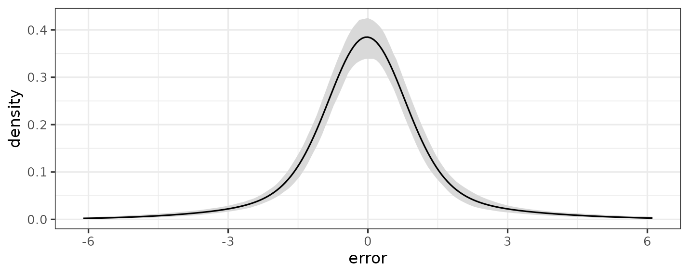
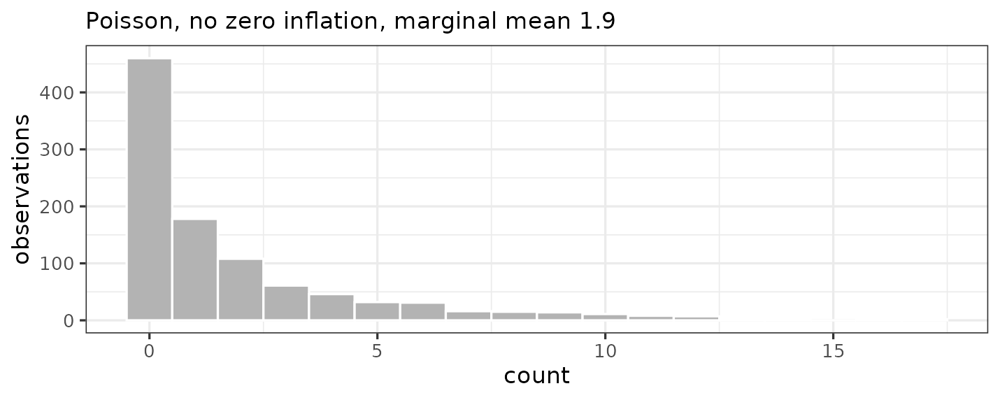

library(bartisan)
set.seed(2026)
# Small chains throughout, so that this vignette builds quickly. The defaults
# are 50 trees and 800 draws after 200 warmup iterations.
ctrl <- bartisan_control(num_trees = 10, num_burn = 150, num_draws = 150)Introduction
This vignette is about choosing a family for
bartisan(). It covers what each one assumes, when to prefer
it over the alternatives, and the handful of places where the choice has
a consequence that is easy to miss. ?bartisan_control
covers how the sampler goes about fitting them.
The family argument works the way it does in
glm(): the stats::family objects work
unchanged, bartisan adds the families that have no
glm() counterpart in the same style, and
custom_family() takes a log density written as an R
function when nothing on the list fits. Unlike ordinary BART, nothing
here requires the response to be conditionally conjugate (Linero 2025),
which is why the list is as long as it is.
In this guide, we will work through the families one at a time. First
we’ll lay out the full list and the questions that most often decide
between them, and then the family that is inferred when the
family argument is left unnamed. Next we’ll take the
response types in turn (i.e., numeric, positive and continuous, binary,
counts, ordered and unordered categories, bounded, and right-censored
times), reporting for each what the measured differences between the
candidate families are. Finally we’ll cover the links beyond the listed
ones and the route to a likelihood of one’s own through
custom_family().
The Families
| Family | Links | Additive predictors | Drawn nuisance parameters |
|---|---|---|---|
gaussian() |
identity |
1 | residual standard deviation |
dpm() |
identity |
1 | error mixture, concentration |
gaussian_ls() |
identity |
2 | none |
Gamma("log") |
log |
1 | shape |
Gamma_ls() |
log |
2 | none |
binomial() |
logit, probit, cloglog
|
1 | none |
poisson() |
log |
1 | none |
negbin() |
log |
1 | dispersion |
zi_poisson() |
log |
2 | none |
zi_negbin() |
log |
2 | dispersion |
ordinal() |
logit, probit, cloglog
|
1 | cutpoints |
multinomial() |
logit, probit
|
one per category, or per non-reference level | latent covariance, for the probit link |
Beta() |
logit, probit, cloglog
|
1 | precision |
ordbeta() |
logit |
1 | 2 cutpoints, precision |
tweedie() |
log |
1 | dispersion, and the power if it is drawn |
weibull_aft(), loglogistic_aft(),
lognormal_aft()
|
none | 1 | scale |
ph() |
none | 1 | baseline hazard per bin |
dpm_aft() |
none | 1 | error mixture, concentration |
custom_family() |
implied by logdens
|
as many as requested | as many as named in aux_names
|
A family with more than one additive predictor fits one forest per
predictor, and predict(type = "link") returns one column
per forest. Nuisance parameters are drawn alongside the trees and
reported in fit$aux.
Choosing a Family
We start from the shape of the response:
| The response is | Use |
|---|---|
| numeric, unbounded |
dpm(), the default; gaussian() if prior
weights are needed; gaussian_ls() if the spread varies with
the predictors |
| positive and continuous |
Gamma("log"), or Gamma_ls() if the
dispersion varies with the predictors |
| non-negative and continuous, with a point mass at zero | tweedie() |
| a proportion strictly inside \((0, 1)\) | Beta() |
| a proportion that can equal 0 or 1 | ordbeta() |
| a 0/1 indicator, or a two-column matrix of successes and failures | binomial() |
| a count |
poisson(), negbin() if overdispersed, or a
zero-inflated family if there are more zeros than either can
produce |
| an ordered factor | ordinal() |
| an unordered factor | multinomial() |
| a time with censoring |
dpm_aft(), the default for survival outcomes;
weibull_aft(), loglogistic_aft() or
lognormal_aft() if the shape of the error is known;
ph() for proportional hazards with a free baseline |
| something else | custom_family() |
Some considerations cut across that table.
One is whether anything besides the mean varies with the predictors.
Every family except gaussian_ls(), Gamma_ls(),
and the zero-inflated pair puts a forest on one location parameter and
holds the rest of the distribution fixed across observations. If the
spread itself moves with \(x\), that is
the wrong assumption, and the two location-scale families relax it:
gaussian_ls() gives the normal’s standard deviation a
forest of its own, and Gamma_ls() does the same for the
gamma’s dispersion.
Another is whether that extra structure is real or a flexible mean would absorb it. A nonparametric mean makes this sharper than it is in a GLM. A sum of trees can produce excess zeros on its own, by driving a Poisson mean very low where the zeros are, so a zero-inflated family is for when the zero mechanism is a separate process worth modeling, not merely for when a histogram spikes at zero. The same caution applies to the multinomial probit’s latent correlations.
When two families are both defensible, we can compare them
empirically rather than reason about them; loo() and
waic() work on a fit:
# The count response used here and through the rest of the vignette
n <- 300
d <- data.frame(x1 = runif(n), x2 = runif(n))
d$count <- rpois(n, exp(1.2 * sin(pi * d$x1) + 0.4))
loo::loo_compare(
loo::loo(bartisan(count ~ ., d, family = poisson(), control = ctrl)),
loo::loo(bartisan(count ~ ., d, family = negbin(), control = ctrl))
)
#> Warning: Some Pareto k diagnostic values are too high. See help('pareto-k-diagnostic') for details.
#> Warning: Some Pareto k diagnostic values are too high. See help('pareto-k-diagnostic') for details.
#> model elpd_diff se_diff p_worse diag_diff diag_elpd
#> model2 0.0 0.0 NA 1 k_psis > 0.54
#> model1 -0.4 1.4 0.61 |elpd_diff| < 4 6 k_psis > 0.54
#>
#> Diagnostic flags present.
#> See ?`loo-glossary` (sections `diag_diff` and `diag_elpd`)
#> or https://mc-stan.org/loo/reference/loo-glossary.html.In this case, both models fit the data approximately equally well
(i.e., due to the small elpd_diff relative to
se_diff).
The Default Family (family Omitted)
The family argument may be omitted from
bartisan(), in which case its default value is determined
by the response variable:
| The response is | Family used |
|---|---|
a Surv object |
dpm_aft() |
| an ordered factor | ordinal() |
| logical, a factor or character with two levels, or numeric taking only the values 0 and 1 | binomial() |
| any other factor or character | multinomial() |
| a two-column numeric matrix |
binomial(), read as successes and failures, unless the
columns look like non-negative times and 0/1 events, which give
dpm_aft()
|
| any other numeric | dpm() |
The choice is reported when it is made, and naming
family silences the message.
d$binary <- rbinom(n, 1, 0.4)
fit <- bartisan(binary ~ x1 + x2, data = d, control = ctrl)
#> ℹ Using `family = binomial()`.
#> ℹ Set `family` explicitly to silence this message.
fit
#> Generalized BART
#>
#> Call:
#> bartisan(formula = binary ~ x1 + x2, data = d, control = ctrl)
#>
#> Family: "binomial" with the "logit" link
#> Observations: 300
#> Structure: 1 forest of 10 trees, soft decision rules
#> Draws: 150 kept after 150 warmupSome boundaries are deliberate. A numeric response taking exactly two
values that are not 0 and 1 is not read as binomial, because
deciding that c(1, 2) means failure and success would be a
guess about which value is the success. And a count is not read as
Poisson, because “the variance equals the mean” is a substantive claim
rather than a reading of the response’s type.
The number of distinct values does not enter into it: every numeric
response gets dpm(). A response with only a handful of
distinct values probably wants ordinal(), but that is a
modeling decision bartisan will not make for you.
Prior weights are taken by gaussian(),
ordinal(), and gaussian_ls() for a numeric
response, and by the three other *_aft() families and
ph() for a censored one. dpm() and
dpm_aft() are the two that cannot, so a fit with weights
and no family named is an error rather than a silent substitution.
Numeric Responses
The families for a numeric response each put a forest on its mean, and they differ in what else they allow to vary:
-
gaussian()assumes one normal error, withsigmadrawn and reported. -
dpm()estimates the error distribution (a Dirichlet process mixture of normals (George et al. 2019) rather than a single normal) but keeps it the same at every \(x\). -
gaussian_ls()puts a second forest on the log standard deviation, so the spread is an unrestricted function of the predictors. -
ordinal()assumes nothing about the error at all; see a continuous outcome as ordinal.
We measured the four on 1000 training and 1000 test observations, 50
trees, 500 draws after 500 warmup, three replicates, with the error
centered so that \(E[Y \mid x]\) is the
same function in every column. RMSE and coverage are for that regression
function on held-out data; the log score is the held-out predictive
density. Cells in all but the last column are RMSE / log score, where
lower RMSE and higher log score are preferred.
ordinal("probit") is fitted to the response binned onto 25
quantiles and predicted with type = "mean", so its RMSE is
on the same scale as the others; its density is on the binned scale and
so has no comparable log score. A bold cell is one whose lead holds in
every replicate.
| Family | normal | \(t_3\) | skewed | bimodal | heteroskedastic | seconds |
|---|---|---|---|---|---|---|
gaussian() |
0.029 / -229 | 0.029 / -179 | 0.036 / -8 | 0.037 / -262 | 0.036 / -507 | 3.3 |
dpm() |
0.029 / -229 | 0.024 / -64 | 0.022 / 181 | 0.022 / 166 | 0.038 / -487 | 4.0 |
gaussian_ls() |
0.029 / -231 | 0.030 / -174 | 0.031 / -7 | 0.040 / -265 | 0.032 / -370 | 19.6 |
ordinal("probit") |
0.029 | 0.035 | 0.031 | 0.043 | 0.037 | 5.1 |
Coverage was between .89 and 1.00 everywhere, with the four families’ medians between .98 and 1.00, so it does not separate them. There are a few things to take from this:
On normal errors they all tie, to three decimal places on RMSE and
within two log points, even though gaussian() is exactly
right there. This makes dpm() a sensible default rather
than a specialist tool: it costs nothing when the simpler assumption
holds.
dpm() is the family for a badly shaped error.
Heavy tails are worth 115 log points over gaussian(),
skewness 189, and bimodality 428, each of them in every replicate, and
on the skewed and bimodal errors it also cuts RMSE to about 60% of
gaussian()’s. When we are unsure what the errors look like,
this is the safe choice, and it is why it is the default.
gaussian_ls() is the family for a varying
error, and only that. It is level with gaussian() in the
first four columns and wins the fifth by 117 log points over
dpm(). Reach for it when a residual plot fans out or when
variability is itself the question. It costs about six times a Gaussian
fit, almost all of it in the second forest, so that forest should be
given fewer trees; setting num_trees = c(50, 10) was two
and a half times faster than c(50, 50) with the same
accuracy on both surfaces.
ordinal() never wins by much and never loses by much.
Binned onto 25 quantiles it ties the others on normal errors and stays
within about a hundredth of the best elsewhere, never first and never
far from it, as we would expect from a model that writes down no error
distribution. Prefer it when the outcome is bounded, heavily rounded, or
piles up at a floor or ceiling, where a continuous density smears mass
across values the outcome cannot take.
Per-Forest Predictors and Settings
The two forests of a location-scale model are separate models of separate things, and every argument that could differ between them may. The tree counts are keyed by forest name rather than ordered, which is the same thing written more legibly. The model formula works this way too, so the scale forest can have predictors the mean forest does not, or fewer:
d$het <- rnorm(n, 2 * d$x1, exp(-1 + 1.5 * d$x2))
fit_sub <- bartisan(list(mean = het ~ x1 + x2,
log_sd = ~ x2),
data = d, control = ctrl,
family = gaussian_ls(),
num_trees = c(mean = 10, log_sd = 5),
sparsity = c(mean = TRUE, log_sd = FALSE))
summary(fit_sub)
#> Generalized BART
#>
#> Call:
#> bartisan(formula = list(mean = het ~ x1 + x2, log_sd = ~x2),
#> data = d, family = gaussian_ls(), control = ctrl, num_trees = c(mean = 10,
#> log_sd = 5), sparsity = c(mean = TRUE, log_sd = FALSE))
#>
#> Family: "gaussian_ls" with the "identity" link
#> Observations: 300
#> Structure: 2 forests of 10 and 5 trees, soft decision rules
#> Draws: 150
#>
#> Predictor usage
#> Splitting rules per draw, and how often used at all.
#>
#> Predictor "mean":
#> mean sd lower upper prop_used
#> x1 14.64 3.34 8 20.3 1.000
#> x2 1.76 1.89 0 6.0 0.667
#>
#> Predictor "log_sd":
#> mean sd lower upper prop_used
#> x2 6.39 1.52 4 11 1
#> x1 0.00 0.00 0 0 0Separate proportions are not always desirable. Each forest draws its
own splitting proportions by default, so each has to work out on its own
which predictors matter, and one component is often far better placed to
answer that than the other: the mean of a location-scale model usually
carries much more signal about the relevant predictors than the spread
does. Setting share_sparsity = TRUE pools the splitting
counts of the forests behind one Dirichlet draw, so a predictor that
earns its rules in one forest keeps its weight in the others. The
forests stay separate in every other respect, with their own trees, cut
points and leaf scales.
set.seed(9)
dw <- data.frame(matrix(runif(400 * 25), 400, 25))
names(dw) <- paste0("x", 1:25)
dw$y <- rnorm(400, 2 + 1.4 * sin(pi * dw$x1 * dw$x2) + 0.9 * dw$x4, 0.5)
apart <- bartisan(y ~ ., dw, family = gaussian_ls(), control = ctrl)
shared <- bartisan(y ~ ., dw, family = gaussian_ls(), control = ctrl,
share_sparsity = TRUE)
top3 <- function(fit, forest) {
imp <- variable_importance(fit)
part <- imp[imp$predictor == forest, ]
paste(head(part$variable[order(-part$prop_splits)], 3), collapse = " ")
}
# the spread is constant here, so the scale forest has nothing of its own to
# find and whatever it concentrates on came from the mean forest
c(apart = top3(apart, "log_sd"), shared = top3(shared, "log_sd"))
#> apart shared
#> "x8 x14 x17" "x1 x4 x2"That is a statement about the data rather than a free improvement: it
helps when the components really do depend on the same predictors and
there are enough irrelevant ones for the selection to be hard, and it
costs something when they depend on different ones.
variable_importance() is where to check, and
?bartisan_control explains the trade.
A formula that names no predictor at all is the limiting case of
this, and it says the parameter is constant: ~ 1 leaves its
forest nothing to split on, so every tree in it is a stump and the
forest is a single drawn scalar. Every family that takes more than one
formula accepts it, which makes the line between a nuisance parameter
and an empty forest a thin one. gaussian_ls() with
~ 1 on its scale is gaussian() with its drawn
sigma; Gamma_ls() with ~ 1 is
Gamma("log") with its drawn shape; and
zi_poisson() with ~ 1 on its inflation part is
the ordinary zero-inflated Poisson with one structural-zero probability
rather than a forest of them.
set.seed(8)
dz2 <- data.frame(x1 = runif(500), x2 = runif(500))
dz2$y <- rnorm(500, 2 * dz2$x1, 0.7)
flat <- bartisan(list(y ~ x1 + x2, ~ 1), data = dz2,
family = gaussian_ls(), control = ctrl)
# no splitting rules in the scale forest, and one value of sigma
c(scale_splits = sum(flat$counts$log_sd),
sigma = mean(exp(flat$eta[[2L]])))
#> scale_splits sigma
#> 0.000 0.718The scalar is drawn under the leaf prior rather than under the prior the corresponding built-in family puts on its nuisance parameter, so the two agree closely rather than exactly. The multinomial families are the exception: their forests are the levels of one categorical parameter and act together rather than describing separate components of the response distribution, so every per-forest argument applies to all of them at once, and more than one value is an error rather than a silent recycling.
The scale forest never splits on x1, because its formula
does not name it. The predictor is still in the data, so nothing about
predict() or newdata changes; the forest
simply never uses it. This is useful when we already know which
covariates drive the spread, or when the second forest is spending
capacity on predictors that only matter for the mean.
?bartisan-families lists the forests of every
multi-forest family in order, with their names.
dpm()’s additive predictor is the conditional mean, as
gaussian()’s is, so type = "link" and
type = "response" agree and either can be compared against
a truth or across families. error_density() returns the
fitted error density with a pointwise interval, which is the object the
family exists to produce:
d$heavy <- 2 * sin(pi * d$x1) + d$x2 + rt(n, df = 3)
fit_dpm <- bartisan(heavy ~ x1 + x2, data = d,
family = dpm(), control = ctrl)
plot(error_density(fit_dpm))
Positive Continuous Responses
The Gamma("log") family puts the forest on the log mean
and draws the shape (i.e., the inverse dispersion), which is one value
for the whole sample and so asserts that the coefficient of variation is
constant. Gamma_ls() relaxes that: it gives the log
dispersion a forest of its own, so the spread is free to move with the
predictors the way gaussian_ls() lets a normal’s standard
deviation move. Giving its second forest an intercept-only formula
recovers the single-dispersion assumption, since ~ 1 names
no predictor and leaves that forest a sum of stumps:
bartisan(y ~ x1 + x2, data = d, family = Gamma_ls()) # dispersion varies
bartisan(list(y ~ x1 + x2, ~ 1), data = d, family = Gamma_ls()) # and held constantstats::Gamma() normally defaults to
link = "inverse" but bartisan fits on
"log" and ignores any other link, saying so once; writing
Gamma("log") silences that. If another link for a gamma
response is genuinely wanted, custom_family() is the route.
Gamma_ls() defaults to the log link without warning.
We compared Gamma(), Gamma_ls(),
gaussian() with a "log" link,
dpm(), and ordinal() with a probit link on 800
training and 800 test observations, 50 trees, 500 draws after 500
warmup, four replicates, over four shapes of error around one mean
function, with each error centered so that \(E[Y \mid x]\) is the same function in every
column. Gamma_ls() was given
num_trees = c(50, 20). ordinal("probit") bins
the outcome onto 25 quantiles and predicts with
type = "mean", so its predictions are on the response’s
scale even though its density is not, which is why it has no log score.
Cells are RMSE / log score, medians over the replicates, and lower RMSE
and higher log score are better. A bold cell is one whose lead over the
next family holds in every replicate; four replicates separate the
families on the log score but often not on RMSE, and the paragraphs
below say which is which.
| Family | gamma, constant dispersion | gamma, varying dispersion | lognormal | heavy tail | seconds |
|---|---|---|---|---|---|
Gamma("log") |
0.379 / -1940 | 0.530 / -2217 | 0.522 / -2075 | 0.455 / -2097 | 8.5 |
Gamma_ls() |
0.407 / -1939 | 0.513 / -2158 | 0.560 / -2076 | 0.422 / -2130 | 53.4 |
gaussian("log") |
0.443 / -2098 | 1.645 / -2480 | 0.997 / -2353 | 1.252 / -2289 | 19.1 |
dpm() |
0.775 / -2007 | 1.449 / -2251 | 0.893 / -2109 | 0.614 / -2043 | 2.7 |
ordinal("probit") |
0.440 | 0.857 | 0.415 | 0.418 | 3.5 |
A few things to take from this:
Gamma_ls() is the family to reach for when the
dispersion might vary, and it costs almost nothing when it does not. In
the varying-dispersion column it gains 59 log points on
Gamma("log") and does so in all four replicates, which is
the reading the second forest exists to improve. Its RMSE there is lower
as well, .513 against .530, but not by enough to separate the two: the
paired differences average -.03 with a standard error of .02. Both
families have the same mean function to find, and it is the spread
around it that only one of them can follow. In the constant-dispersion
column, where Gamma("log") is exactly right, the two are
indistinguishable on both readings, the paired differences averaging
zero on RMSE and under a log point. That is the same property that makes
dpm() a safe default against gaussian(), and
it is the argument for starting here when the outcome is positive and
the spread is not known to be stable. What it costs is time, at six
times Gamma("log"), almost all of it in the dispersion
forest, which takes the sampler’s general path where the mean forest
does not.
ordinal("probit") on 25 bins has the best RMSE of any
family on the lognormal error, 21% below the best of the gammas and
lower in every replicate, and it ties them on the heavy tail, at a
fraction of the cost and with no assumption about the error’s shape at
all. What it gives up is the density on the original scale, and with it
loo() comparisons against the other families here. It is
the option to remember when the mean is the estimand and the error is a
nuisance; see a continuous
outcome as ordinal.
On the heavy tail, dpm() has the best density of any
family, 52 log points ahead of Gamma("log") and ahead in
every replicate, which is the purpose of the mixture. Its RMSE there is
middling, because a free error distribution buys the density rather than
the mean.
Binary Responses
The binomial() family accepts a 0/1 numeric response, a
logical, a two-level factor, or a two-column matrix of successes and
failures. For prediction, the link hardly matters ("logit"
and "probit" differ by a scale factor of about 1.6 and give
fitted probabilities that are hard to tell apart), so the choice is
better made on grounds other than fit.
"logit" is the default because it is the default in
stats::binomial(). Its predictor is a log odds, which is
the scale many readers of a binary model expect, and it is the link
under which a contrast has an odds-ratio reading.
"probit" reads the model as a normal latent variable
crossing a threshold, which is the right link when that latent variable
is the object of interest, and it is the one
predict(type = "stdlv") is most natural for. It is also the
fastest of the three.
"cloglog" is the one substantively different choice,
because it is not symmetric: swapping the labels of success and failure
gives a different model, where for logit and probit it gives the same
model with the predictor negated. Use it when that asymmetry is the
point: when the outcome is “at least one event occurred” and the
underlying count is Poisson, where the complementary log-log model is
exactly right, or in discrete time, where the cumulative version
is the discrete proportional hazards model and the predictor is
a log hazard ratio.
With very few events, the whole fit mixes slowly regardless of the
link because a handful of events carry little information: in a
simulation with 2000 observations, the effective sample size of the
level of the predictor fell from about 860 at half positives to 8 at
0.2%. Lengthen the chain and read diagnose().
Counts
The poisson() family restricts the conditional variance
to equal the conditional mean, and the negbin() family adds
a dispersion parameter reported as theta. The
zi_poisson() and zi_negbin() families mix a
point mass at zero (the zero-inflation part) with a count component and
give each part its own forest (the first predictor is the log mean of
the count, the second the log odds of being a structural zero), so the
excess-zero mechanism can depend on the predictors. As with standard
GLMs for count variables, these models can include an offset.
To decide which family to use, consider the following questions, in this order:
Excess Zeros
The first question is whether there are more zeros than the count
component can produce, rather than whether there are many zeros: a
Poisson with a small mean produces plenty, and a forest can drive the
mean low exactly where the zeros are. Fit the plain family and the
zero-inflated one and compare with loo(). Reach for zero
inflation when the zero mechanism is itself something to model, or when
the two processes have different predictors, not merely to improve a
fit.
It is worth seeing how far a marginal look at the response can mislead here. The counts below are Poisson with no inflation whatsoever, but the conditional mean ranges over two orders of magnitude, so the low end of it contributes a large pile of zeros:
set.seed(11)
nz <- 1000
dz <- data.frame(x1 = runif(nz), x2 = runif(nz), x3 = runif(nz))
# No zero inflation anywhere in this: one Poisson draw per observation
dz$count <- rpois(nz, exp(-3 + 5 * dz$x1 + 0.5 * dz$x2))
c(mean = mean(dz$count), zeros = mean(dz$count == 0),
var_over_mean = var(dz$count) / mean(dz$count))
#> mean zeros var_over_mean
#> 1.94 0.46 4.56
library(ggplot2)
ggplot(dz, aes(count)) +
geom_histogram(binwidth = 1, fill = "grey70", color = "white") +
labs(x = "Count", y = "Observations",
subtitle = "Poisson, no zero inflation, marginal mean 1.9") +
theme_bw()
Nearly half the observations are zero, where a Poisson with the marginal mean of 1.9 would give 14%, and the variance is four and a half times the mean. On both of the marginal diagnostics usually reached for, these data look zero-inflated and overdispersed, and they are neither.
A comparison of fits says the same. Fit to these data and compared
with loo(), the plain Poisson comes out ahead of both
zero-inflated families, and of negbin() as well, despite a
response that is 46% zeros. The forest already accounts for the zeros by
finding where the conditional mean is small, as a nonparametric mean is
meant to, so a mixture has nothing left to explain and pays for its
extra parameters. With a flexible mean, a feature of the
marginal distribution of the response is not evidence about the
conditional model. Reach for zero inflation when the zero mechanism is a
process worth modeling in its own right, and let a comparison of fits,
not a histogram, settle whether it is there.
Overdispersion in the Count Component
The next question is whether the count component is overdispersed
once the zeros are accounted for. A spike at zero inflates the sample
variance and looks like dispersion.negbin() and
zi_negbin() separates the two at the cost of a parameter;
if theta comes back large with a tight posterior, the
negative binomial is not buying anything and poisson() or
zi_poisson() is the better-conditioned fit.
Once again, the ordinal() family is another option worth
knowing about for counts. A count is ordered and takes few distinct
values, the case the cutpoint structure is designed for: it makes no
assumption about the count distribution, needs no dispersion parameter,
and handles excess zeros without a mixture, since the zero category
simply gets whatever probability the cutpoints give it. Predict with
type = "mean" to get predictions on the original response
scale. The limits are that it cannot predict a count larger than the
largest one observed, and that it has no rate interpretation (i.e., no
log link, so no incidence-rate ratio). It can be useful to bin first if
the counts range over more than a few dozen values, as below.
Ordered Categories
The ordinal() family expects an ordered factor for the
response variable, though a numeric response is accepted and its sorted
unique values are taken as the categories. It uses the cumulative-link
parameterization of MASS::polr() (Venables and Ripley 2002) and
WeightIt::ordinal_weightit(), in which \(P(Y \le k) = F(c_k - \eta)\), so larger
values of the additive predictor shift mass toward higher
categories.
Only the differences \(c_k -
\eta_i\) are identified, so one location has to be pinned. With
three or more categories, the draws are reported in the chart where the
additive predictor has mean zero over the fitted sample and every
cutpoint is free, as polr() and
ordinal_weightit() report them when the predictors are
centered, which makes the cutpoints readable as category boundaries.
With exactly two categories, the single boundary is folded into the
intercept instead, so a two-category response is exactly binary
regression on the same scale1.
The three links are read as for the binomial, plus one consideration
specific to the ordinal case: the link decides what is held constant
across categories. "logit" gives the proportional odds
model, in which a contrast is a log odds ratio that is the same at every
cutpoint. "probit" gives the ordered probit, and is the
link to choose when the latent variable is the object of interest (e.g.,
a trait, a utility, an underlying measurement recorded in bins).
"cloglog" gives the proportional hazards model on
the categories, so choose it when the categories are ordered durations
or stages. Accuracy is much the same across the three;
"probit" is the fastest.
Ordered categories can also be treated as unordered categories and
fit with family = multinomial(), described below; typically
this produces more variable predictions as it requires a forest for each
category rather than a single forest governing the entire distribution
function.
An ordinal fit can also be reported on a single scale, using
prediction types that follow WeightIt.
predict(type = "mean") weights the category probabilities
by the labels read as numbers, so levels "1",
"2", and "4" give a mean between one and four,
and the values argument says what the categories are worth
when the labels are not numbers. predict(type = "stdlv")
divides the predictor by the standard deviation of the latent variable
it indexes, which puts fits with different links, or different amounts
of signal, on one scale; it works for binomial() too, since
a binary response is the same construction with one threshold. Note that
the complementary log-log error enters the two families with opposite
signs, and ?predict.bartisan_fit says why.
The Prior on the Cutpoints (cut_alpha)
A cutpoint is an awkward thing to put a prior on. They are ordered, they live on the latent scale, and no single value means anything on its own: there is no intuition to draw on for whether \(c_3 = 1.4\) is a reasonable belief. What the cutpoints determine, though, is interpretable. At a fixed anchor \(\varphi\) they induce a vector of category probabilities,
\[P_1 = F(c_1 - \varphi), \qquad P_k = F(c_k - \varphi) - F(c_{k-1} - \varphi), \qquad P_K = 1 - F(c_{K-1} - \varphi)\]
which is a point on the simplex. The prior goes there and is pulled back through the change of variables. This is the induced-Dirichlet construction (Betancourt 2019, 2025), used for ordinal meta-analysis by Cerullo et al. (2025):
\[p(\mathbf{c} \mid \alpha, \varphi) = \mathrm{Dir}\big(\mathbf{P}(\mathbf{c}, \varphi) \mid \alpha\big) \cdot \big|\mathbf{J}_{\mathbf{c} \to \mathbf{P}}\big|\]
The Jacobian makes it cheap. Each \(c_k\) appears in exactly two of the probabilities, \(P_k\) and \(P_{k+1}\), so the matrix is bidiagonal and its determinant is the product of its diagonal, \(\prod_k f(c_k - \varphi)\), with \(f\) the link’s density. The log prior is therefore one link density per cutpoint plus a Dirichlet term:
\[\log p(\mathbf{c}) = \sum_k (\alpha_k - 1) \log P_k + \sum_k \log f(c_k - \varphi)\]
At the default cut_alpha = 1, the Dirichlet term drops
out and what is left says the induced probabilities are uniform over the
simplex. That is not the same as a flat prior on the cutpoints
themselves, which is improper; the Jacobian is exactly the difference
between the two. Larger values pull the probabilities toward equal
shares and smaller ones toward a few dominant categories. The anchor is
the intercept, so the probabilities being described are the ones at the
null fit rather than at an arbitrary zero, which is also the chart the
cutpoints are reported in.
ordbeta() (discussed below) carries the same prior. It
has three probabilities at the anchor, the masses at zero and one and
the interior share, and the map from its two cutpoints to them has the
same bidiagonal shape.
Empty Categories
A level of an ordered factor that no observation takes is kept rather than dropped, so a rating scale with an unused point is still fitted on all of its points and can still predict one.
The thresholds either side of such a category remain identified. Each \(c_k\) enters the likelihood through \(P(Y = k)\) and \(P(Y = k+1)\), so an unused category \(k\) leaves \(c_{k-1}\) informed by the observations in category \(k-1\) and \(c_k\) informed by those in category \(k+1\). Two adjacent unused categories are the exception: the threshold between them appears only in terms no observation contributes to, and it is then drawn from the prior, restricted to the range its identified neighbors leave. That is the honest answer for a quantity the data say nothing about.
A numeric response is read as the distinct values it takes, so a
scale with an unselected point has to be given as an ordered factor for
that point to be modeled. Fitting ordinal() to an integer
response whose range has gaps warns and says how:
A Continuous Outcome as Ordinal
ordinal() on a numeric response can be a useful way to
model it, as demonstrated above. Every distinct value of \(Y\) becomes a category, the cutpoints
absorb the marginal distribution of \(Y\), and the forest is left to explain only
the ordering. Nothing is assumed about the error, and the model
for \(P(Y \le y \mid x)\) is invariant
to any monotone transformation of \(Y\)
(i.e., fitting on \(Y\), \(\log Y\) or \(\sqrt Y\) gives the same model). This is
the semiparametric ordinal regression rms::orm() fits for
continuous outcomes, with a forest in place of the linear predictor.
Predict with type = "mean", which reads the category labels
as numbers and returns \(\sum_k y_{(k)} P(Y =
y_{(k)} \mid x)\).
It can be useful to bin the outcome first in a smaller number of
categories, as one cutpoint per distinct value means \(n\) cutpoints: at 1000 observations an
unbinned fit took 73 seconds against 2.7 for gaussian().
Collapsing onto a grid of quantiles is both faster and more accurate,
because a cutpoint vector with a thousand weakly-identified entries is
worse conditioned than one with 25. Somewhere between 10 and 50 quantile
bins is enough, and the choice inside that range hardly matters; 25 bins
was sixteen times faster than no binning and slightly more accurate.
Keep each bin’s mean as its label so that type = "mean"
still reports on the outcome’s scale. See below for an example:
# Binning d$heavy
nbins <- 25
d$binned <- d$heavy |>
quantile(seq(0, 1, length.out = nbins + 1)) |>
unique() |>
cut(x = d$heavy, include.lowest = TRUE, labels = FALSE) |>
ave(x = d$heavy)
fit_oc <- bartisan(binned ~ x1 + x2,
data = d, control = ctrl,
family = ordinal("probit"))
head(predict(fit_oc, type = "mean"))
#> [1] 2.253 2.553 1.369 2.012 2.784 0.136This approach has limits. The prediction from
type = "mean" is a convex combination of observed outcome
values, so it can never predict outside the range of the training
outcome, which is a feature when the outcome has a hard floor or ceiling
and a liability when extrapolation is needed. And the invariance is a
property of the model for \(P(Y \le y \mid
x)\), not of the mean read off it: the type = "mean"
prediction after fitting on \(\log Y\)
is not the log of the type = "mean" prediction after
fitting on \(Y\).
Unordered Categories
The multinomial() family expects an unordered factor. It
can accept one of two links: "logit" and
"probit". Start with link = "logit", the
default: it is faster, its predictor is a log odds, and it is the
parameterization most readers expect. By default it fits one forest per
category and leaves the model unidentified (Murray 2021), which keeps the prior
symmetric in the categories; every identified quantity is still
recovered from the draws. Passing reference to
multinomial() pins that category and fits one fewer forest,
giving log odds against it the way nnet::multinom() and
WeightIt::multinom_weightit() do, which may be a better
choice when a particular contrast is the quantity of interest.
Choose link = "probit" when the alternatives are
plausibly substitutes: it allows the latent utilities to be
correlated, which a multinomial logit cannot express at all, so it is
the link for when the independence-of-irrelevant-alternatives assumption
is the one in doubt. Expect to pay in speed and in a simulated
likelihood because the probabilities are Gaussian orthant probabilities
with no closed form, so they and the reported log likelihood are
computed by simulation. The latent utilities are drawn by the
augmentation sampler of Xu et al. (2025), and their covariance is normalized
by the trace constraint of Burgette and Nordheim
(2012) rather than by pinning one
variance, which keeps the prior symmetric in the categories here too.
Before that normalization the covariance carries an inverse Wishart
prior with the identity scale and one degree of freedom more than its
dimension (Imai and van Dyk 2005), under which
each of its correlations is marginally uniform.
With a multinomial probit family, the latent correlations are only weakly identified; we do not recommend reporting them as estimates. They enter the likelihood only through orthant probabilities of a distribution whose location is a sum of trees, and a flexible mean absorbs much of the dependence they are meant to capture. At 900 observations, the posterior tracked a swept true correlation only loosely and not monotonically, and the 95% intervals could cover more than half of the \((-1, 1)\) the parameter can occupy at all; repeating the zero case over eight draws of the data gave posterior means from \(-.60\) to \(.33\). By 3000 observations it behaves. What the probit link is still good for is the fit: allowing correlated errors changes the category probabilities whether or not \(\Sigma\) is pinned down.
Bounded Responses
The Beta() family is for beta regression with a response
strictly inside the unit interval \((0,
1)\): a forest on the link of the mean \(\mu\) and a precision \(\phi\) drawn alongside it, so the response
is distributed as \(\mathrm{Beta}(\mu\phi,
(1-\mu)\phi)\) with variance \(\mu(1-\mu)/(1+\phi)\). The same three links
as binomial() are allowed, read the same way.
d$rate <- rbeta(n, plogis(1.5 * sin(pi * d$x1)) * 12,
12 - plogis(1.5 * sin(pi * d$x1)) * 12)
fit_beta <- bartisan(rate ~ x1 + x2, data = d,
family = Beta(), control = ctrl)
mean(fit_beta$aux[, "phi"])
#> [1] 13The ordbeta() family requests the ordered beta
regression of Kubinec (2023), for a response on the
closed unit interval \([0,
1]\) with point masses at zero and one (e.g., a percentage of a
budget, a slider scale). One predictor drives both the probability of
landing on an endpoint, through a pair of cutpoints as in an ordinal
model, and the mean of the beta density in between.
Choose between Beta() and ordbeta() based
on whether the response can reach a boundary, not on whether it happens
to in the sample at hand. A response at zero or one has no beta density,
so Beta() errors rather than nudging it inward. In the
other direction, ordbeta() fitted to a response with no
boundary observations leaves its two cutpoints with nothing to identify
them; the fit is not much worse for it, but the cutpoints are not
interpretable and drift to large magnitudes.
A Point Mass at Zero and a Continuous Positive Part
Spending, rainfall, insurance claims and earnings share a shape that
none of the families above has: a genuine mass of exact zeros, and a
skewed continuum above them. The tweedie() family is the
compound Poisson–gamma, one of the exponential dispersion models of
Jørgensen (1987), which models the pair as one
process. A Poisson number of gamma-distributed amounts are added up, so
a count of zero produces an exact zero and any positive count produces a
positive amount, and the mean and variance come out as
\[\mathrm{E}[y \mid x] = \mu(x) = \exp(\eta(x)), \qquad \mathrm{Var}(y \mid x) = \phi\,\mu(x)^p\]
for a variance power \(p\) between 1 and 2. One forest does all of it, because the probability of a zero follows from the mean:
\[\Pr(y = 0 \mid x) = \exp\!\left(-\frac{\mu(x)^{2-p}}{\phi\,(2-p)}\right)\]
That tie makes this a single process rather than two, and it is also
the assumption to check. The share of zeros has no level of its own: two
people with the same mean have the same probability of a zero, with the
functional form above. Where that is wrong, a two-part model is the
alternative, and custom_family() is how to write one.
mu <- exp(1.5 + sin(pi * d$x1))
lambda <- mu^(2 - 1.5) / (4 * (2 - 1.5))
claims <- rpois(n, lambda)
d$spend <- ifelse(claims > 0,
rgamma(n, shape = claims * (2 - 1.5) / (1.5 - 1),
scale = 4 * (1.5 - 1) * mu^(1.5 - 1)),
0)
fit_tw <- bartisan(spend ~ x1 + x2, data = d,
family = tweedie(), control = ctrl)
c(zeros = mean(d$spend == 0), phi = mean(fit_tw$aux[, "phi"]))
#> zeros phi
#> 0.23 4.20The power argument is fixed at 1.5 by default rather
than drawn, which is the one place this family differs from the rest in
how its nuisance parameters are treated. The power is weakly identified
at the sample sizes this package is used on, and a badly determined
power drags the dispersion with it, since the two are identified jointly
through the share of zeros. Pass power = NULL to draw it
when the sample is large and the shape is of interest in itself; leave
it alone when only the mean is wanted.
Because the mean is \(\exp(\eta)\)
and nothing more, a counterfactual mean needs nothing beyond the forest,
and a tweedie() fit is directly comparable with a
poisson() or Gamma("log") fit of the same
response. A two-part model has no such property: its mean has to be
recombined across two forests before anything can be contrasted.
Right-Censored Survival Times
There are five families that can be used with survival time response,
all taking a survival::Surv() object. They differ in what
the predictor means and in what the model leaves free:
| Family | Model | A contrast in the predictor is | Left free |
|---|---|---|---|
weibull_aft() |
\(\log T = \eta + \sigma\epsilon\), \(\epsilon\) smallest extreme value | a log time ratio, and also a log hazard ratio | \(\sigma\) |
loglogistic_aft() |
the same with \(\epsilon\) logistic | a log time ratio | \(\sigma\) |
lognormal_aft() |
the same with \(\epsilon\) normal | a log time ratio | \(\sigma\) |
dpm_aft() |
\(\log T = \eta + W\), \(W\) a mixture | a log time ratio | the whole error density |
ph() |
\(\lambda(t \mid x) = \lambda_0(t)e^{r(x)}\) | a log hazard ratio | the baseline \(\lambda_0\) |
All four accelerated failure time families share the structure \(\log T = \eta(x) + W\) with \(W\) independent of \(x\), and that alone makes a contrast in the
predictor a log time ratio: every quantile of \(T\), its mean, and its geometric mean all
scale by \(e^{\Delta\eta}\), whatever
shape \(W\) has. They differ in what
\(e^{\eta}\) is on its own, since each
pins its error’s location differently, and
vignette("survival") gives that per family.
weibull_aft() is the only one whose predictor also carries
a log hazard ratio, of \(-\Delta\eta/\sigma\), and that is a
property of the smallest extreme value error rather than of the shared
structure: it is the only error that makes an accelerated failure time
model proportional hazards as well.
The three structured accelerated failure time families (i.e., the
first three above) fix the shape of the error and so of the hazard.
lognormal_aft() and loglogistic_aft() are the
quickest of the five to fit, since imputing the censored times leaves
the sampler a quadratic target; weibull_aft(), whose
likelihood takes the exponential path instead, is the slowest.
ph() frees the baseline hazard instead, so it fits a hazard
of any shape at the price of asserting proportionality and of reading
the predictor on the hazard scale. dpm_aft() frees the
error density (Henderson et al. 2020), which costs
little when a single normal is right and gains a great deal when it is
not.
dpm_aft() is the default for a Surv
response, on the evidence in the survival vignette and because it is one
of the cheaper families to fit. weibull_aft() is the one
family that is both an accelerated failure time and a proportional
hazards model, so it is the one to name when we want a hazard-ratio
reading.
d$time <- rexp(n, exp(-(1 + d$x1)))
d$event <- rbinom(n, 1, 0.7)
fit_aft <- bartisan(survival::Surv(time, event) ~ x1 + x2,
data = d, control = ctrl,
family = weibull_aft())
colMeans(fit_aft$aux)
#> sigma
#> 0.995The survival function comes from
predict(., type = "survival"), which takes the times to
report it at and works for every family in the table:
fit_ph <- bartisan(survival::Surv(time, event) ~ x1 + x2,
data = d, control = ctrl,
family = ph())
predict(fit_ph, type = "survival", times = c(1, 2, 5)) |>
head(3)
#> 1 2 5
#> [1,] 0.888 0.769 0.512
#> [2,] 0.862 0.720 0.433
#> [3,] 0.853 0.703 0.407It is also the estimand we usually want. The question is rarely about
the predictor but about survival at a horizon (e.g., the difference in
one-year survival between two groups), and that is a contrast of
type = "survival" at one time.
We recommend dpm_aft() as the default when we have no
view about the shape of anything; measured against five alternatives
over six data-generating truths, it was best or tied-best on four and
never worse than third, and it matched the correctly specified family on
the two truths where one existed. Use lognormal_aft() or
loglogistic_aft() when the fit has to be quick,
weibull_aft() when a hazard-ratio reading is wanted from a
parametric fit, and ph() when the shape of the baseline
hazard is the point. If the covariate effect may move with time, so that
survival curves cross, none of the five is right and the discrete-time
route is.
The trade-offs behind these choices are measured in
vignette("survival", package = "bartisan"), which covers
what each estimand is, which hazard shapes each family can and cannot
represent, how they behave under censoring and under misspecification,
the discrete-time route for non-proportional hazards, and one trap in
comparing their log scores.
Other Links and Custom Likelihoods
Links beyond those in the table are accepted for
gaussian(), binomial(), poisson()
and Beta(), and applied from R by composing the supplied
inverse link with the family’s own. So binomial("cauchit")
works, as does any link object of the kind
stats::make.link() returns, including one written by hand.
Note that the fit is slower, because each leaf costs a call into R, and
that the additive predictor is unconstrained, so a link whose inverse
has a restricted range (e.g., poisson("identity")) gives
non-finite densities for some predictors, which are rejected rather than
breaking the chain but are wasted work. bartisan() reports
that when the fit starts. The families with more than one predictor, or
whose link enters somewhere other than a single mean, take only their
listed links.
custom_family() can be used to fit a BART model with a
density of the user’s design. It takes the log density itself and fits
the model that goes with it. The sampler needs only the first two
derivatives with respect to each additive predictor, and central
differences of the supplied function produce both. Terms free of
eta, the predictor to be modeled by BART, may be dropped:
they cancel from every acceptance ratio. See below for an example of a
“hand-rolled” Poisson fit using the Poisson density
dpois().
# Custom Poisson family
pois_by_hand <- custom_family(
logdens = function(y, eta) dpois(y, exp(eta[, 1]), log = TRUE),
start = log(mean(d$count)),
name = "hand-rolled Poisson")
fit_custom <- bartisan(count ~ x1 + x2,
data = d, control = ctrl,
family = pois_by_hand)
# Internal Poisson family
fit_pois <- bartisan(count ~ x1 + x2,
data = d, control = ctrl,
family = poisson())
cor(predict(fit_custom, type = "link"),
predict(fit_pois, type = "link"))
#> [1] 0.998The function is called once per leaf per Fisher-scoring step with the
observations reaching that leaf, so it must be vectorized over
y and the rows of eta and must return exactly
one value per row. Ask for several additive predictors with
num_predictors; supply derivatives when they
are easy to write down, which cuts three calls to one and removes the
differencing error. See ?custom_family for details.
Nuisance parameters are drawn too, if they are named. The function
supplied as logdens then takes a third argument holding
their current values, and the draws come back in fit$aux
under the names given, covered by summary() and
diagnose() like any other family’s:
# Custom Gaussian family
gauss_by_hand <- custom_family(
logdens = function(y, eta, aux) dnorm(y, eta[, 1], exp(aux[1]), log = TRUE),
aux_start = c(log_sigma = 0),
start = mean(d$heavy))
fit_aux <- bartisan(heavy ~ x1 + x2,
data = d, control = ctrl,
family = gauss_by_hand)
# Internal Gaussian family
fit_gauss <- bartisan(heavy ~ x1 + x2,
data = d, control = ctrl,
family = gaussian())
cor(predict(fit_aux, type = "link"),
predict(fit_gauss, type = "link"))
#> [1] 0.999
# Estimate of the auxiliary parameter
summary(exp(fit_aux$aux[, "log_sigma"]))
#> Min. 1st Qu. Median Mean 3rd Qu. Max.
#> 1.32 1.44 1.47 1.48 1.53 1.63
summary(fit_gauss$aux[, "sigma"])
#> Min. 1st Qu. Median Mean 3rd Qu. Max.
#> 1.34 1.44 1.47 1.48 1.51 1.63There is no prior argument and no bounds argument. A parameter with a
restricted range is handled the way it would be for a real predictor, by
writing the transform into logdens, as the
exp(aux[1]) above does. The aux_start argument
need only be the right order of magnitude; the sampler walks to the
posterior from a poor start.
It cannot take a non-numeric response, so a factor has to be coded
first. It also cannot report a fitted mean, since the package cannot
know what the mean of a supplied density is, so
predict(type = "response") returns the additive predictors
instead, though type = "density" works.
Custom likelihoods are why bartisan is named what it is; they support artisanal models augmented by BART. Anywhere a linear predictor might otherwise go in a model, it can be estimated flexibly with BART instead.